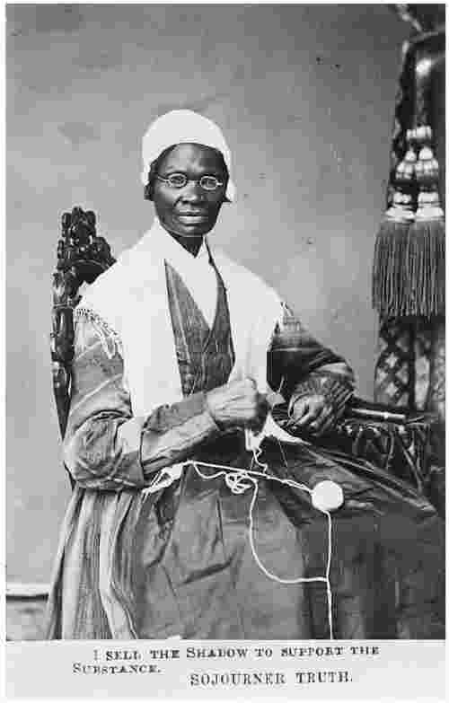

1851年5月28日早晨，在阿克伦市 [1] 一座拥挤的教堂里，一位自称索杰纳·特鲁斯 [2] 的女性站起来，在俄亥俄州妇女权利大会上发表了一番演讲，她过去曾是个奴隶。索杰纳·特鲁斯所说的内容有两种记载。这是第一种（因为篇幅原因而稍做了编辑）：
这是第二种记载（也经过了编辑）：
第一段记载是由马里厄斯·鲁滨逊写下来的，他是编辑塞勒姆市的《反奴号角》的一位白人男性。他记录的版本于1851年6月发表在该报上。第二段记载于1863年4月发表在另一张报纸——纽约的《独立报》上，记录者是一位白人女性作家弗朗西丝·达纳·盖奇。两个版本还为特鲁斯的演讲描述了不同的听众。鲁滨逊（实际上还有其他资料）显示的是支持呼吁妇女权利者的一场集会，与会者怀有敬意地倾听着。盖奇说的却是由傲慢的男性和羞怯的女性所组成的充满敌意的人群，其中有些人不想将奴隶制和种族问题与对妇女权利的呼吁联系起来。那么，哪一种记载才是真相呢？
前几章还有其他的问题尚未解决：历史学家能否理解和接近过去的生活？他们写下的故事是否是“真实的 故事”？历史的意义会是什么？我想我们在结束这本小书之前可以实现这些诺言，我们可以从尝试回答上述问题开始。
约1797年，索杰纳·特鲁斯在纽约州的阿尔斯特县生于伊沙贝拉·范·瓦格伦的家中。她是一个奴隶家庭的孩子，主人是一名曾在美国革命中参战的上校。大约三十岁时她成了一位自由女性，虽然她的孩子们仍然是奴隶。她虔诚地信奉宗教，不识字，但显然具有坚强的个性。1843年，她开始使用响亮的新名字，参加了废奴运动、美国内战和争取妇女权利的斗争。她的详细生平见于其口述自传《索杰纳·特鲁斯自述》，该书出了好几个版本。她在世时已经成了一位知名女性（见过三位不同的美国总统），成了非裔美国人的反抗意识和女性主义声明的象征，现在主要因“我不是一个女人吗？”的演讲而被人们记住。
我们还有关于19世纪奴隶和曾经是奴隶的那些人的生活的其他记载，许多是由那些人自己记下或口述的。这样，人们也许会试图重建当时美国黑人的心态——一种共有的思想和语言模式，从而确定阿克伦演讲的哪一种记载更符合这一模式。这会让我们倾向于盖奇的记载：它是用方言写成的（因为一个不识字的黑人妇女肯定不会说第一段记载中那种准确的英语），它“可信地”缺乏对“智力”之类抽象概念的了解，它还回荡着口头表演那诗歌般的回响——“我不是一个女人吗？”这和美国黑人的宗教布道传统有所关联。
但把心态作为一个概念的问题在于，它会削平一切差异，将复杂的人类特性浇铸成一幅 某时某地的“常态”画面。这些“常态”要素不可避免地被从资料，通常是写下来的文献资料中提取出来，它们本身就代表 了人们如何说话、思考和行动。历史学家内尔·埃尔温·佩因特 [4] ——索杰纳·特鲁斯的传记作者——告诉我们，特鲁斯通常并不喜欢用方言记录她说的话。我们或许认为与发音一致的拼写方式代表着真实，特鲁斯却怀疑它贬低了自己不得不说的话的意义。确定阿克伦演讲的第二种记录是真实的——因为它看起来更像是我们所期待的一位未受教育的黑人妇女所说的话——就是将个体的索杰纳·特鲁斯熔入“黑人妇女”这个熔炉，而没有问自己是如何会有这种期待的。不是说不能尝试对心态进行更微妙、更敏感的重建，而是说假设只有一种 不变的模式是危险的。心态会使变化和差异变得模糊，它还会隐藏斗争和冲突的存在。索杰纳·特鲁斯所从事的正是这样一种斗争：在内心深处，促使白人男性以不同的方 式 思考性别和种族。

图19 索杰纳·特鲁斯
要确定哪种记载是真实的，要理解作为历史行动者的索杰纳·特鲁斯，就会发现历史学家在两种规则之间进退维谷。一方面是对过去事件的想象性重构：询问他（她）自己“如果我 在那座教堂里，我会听见说了些什么？它对我来说意味着什么？”另一方面是冷酷的侦探：质询资料“你们哪一个在对我说谎？”英美历史学家喜欢把这种二分法描述为作为艺术的历史和作为科学的历史之间的冲突，询问我们的主题究竟属于哪一个阵营。但这是并且总是一个愚蠢的问题，它任意曲解了艺术和科学这两者的性质，假装后者不包括想象或领悟，而前者不具备严密的观察或系统的技巧。它还分裂了两种类型的知识：以意义和理解为基础的真相，和以呆板的事实和平庸的“真实”为基础的真相。换言之，它是在问一个古老的问题：历史知识是主观的（依赖于观察者）还是客观的（独立于观察者）？
如果我们采用“侦探”的立场，也许会认为阿克伦演讲的第一种记录是真实的。它的撰写时间与事件最为接近，作者很熟悉索杰纳·特鲁斯并对语言很敏感，所以（如佩因特所说）不太可能漏掉那个由漂亮的短句“我不是一个女人吗？”组成的四叠句。通过对证据做这样的细致分析，现在大多数历史学家认为鲁滨逊的记载是真相。
然而，历史学家作为侦探的形象（它深受一代代作家的热爱）忽略了犯罪故事的最后一个篇章：法庭现场。侦探力图确定哪种记录是对的、哪种是错的，但只有在陪审团宣布判决以后故事才算完成。因为面对真相与谎言之战的观众也得确定相互冲突的故事的意义 所在。在历史中和在法律中不一样，同一事例可以重新尝试许多次。这暗示着两件事情：首先，事实与意义之间的对立是不能成立的，因为没有任何“事实”和“真相”可以在意义、解释、判断的语境之外被说出；其次，真相从而是一个一致同意 的过程，因为什么成为“真相”（什么被承认是“真实的 故事”）有赖于同侪的普遍（如果不是绝对的话）接受。
有可能，鲁滨逊对索杰纳·特鲁斯演讲的记载比盖奇的诗化版本更加准确。但盖奇的重述也许抓住了那位妇女的一些不同的方面：她是如何行动的？与她熟识的人是如何理解她的？然而，最终我们还是不知道 。历史学家可以想象他（她）自己回到那座教堂，可以带着一切必需的勤奋、谨慎和开放的同情对资料进行考察。但他（她）不可能真的在 那儿。就算他（她）能做到，也不能保证历史学家从特鲁斯的嘴里听到的内容，与每一个听众自以为倾听到的内容完全一致。正如每一位侦探和历史学家所知，完全一致的记述通常表明写作时的串通，而不是独立的报道。鲁滨逊和盖奇的记录在特鲁斯所说的大部分内容上是一致的，尽管它们在主题的顺序和使用的语言方面有所差别。所以，这里我们要处理的是情感和意义的问题。
确定“哪个版本是真实的”，还意味着要把某个版本变成需要抛弃的碎片。但我们愿意将“我不是一个女人吗？”这样美好的东西弃若弊屣吗？这并非建议历史学家不应该追求真相，因为，如果没有别的东西，真实的 故事是最有可能说服陪审团做出一致判决的。但有必要指出，如果追求一种唯一的、整体的真相，我们就会使另一些可能的声音即不同的历史陷于沉默。
这不仅仅是一个夸大其词的告诫，因为压制其他历史故事的过程已经延续了两千多年。修昔底德的政治史之塔遮蔽了其他的声音、其他的过去，虽然（我们已经看到）在各个时代都有一些从那些围墙后部分地逃离。然而，这座塔只是在20世纪才开始倒塌，在最近三十年才最彻底地倒塌。现在，政治史和事件叙述跟其他的 真实故事一道享有尊崇的地位，那些故事是关于一切时代、地方和文化的绝大多数人民的。社会史从“除去了政治的……历史”（如英国历史学家G.M.屈威廉 [5] 曾经描述的那样）变成了一个活生生的、争论不休的、强有力的领域，将马克思主义、人类学家、社会学家和年鉴派的心态结合起来，去理解过去人们的日常生活以及它们如何共同影响着“实际发生之事”。至此应该清楚了，普通民众的行动也能产生“大”事件，正如一小群国王、政治家、统治者等精英分子所做的决定一样：没有乔治·伯德特就没有美洲的殖民化，没有无套裤汉就没有法国大革命，没有索杰纳·特鲁斯就没有奴隶制的废除。
但是社会史又产生了更多的问题。战后时期，女性主义历史学家开始质疑女性是否愿意被纳入“（男）人类”（mankind）这个概念，开始考察女性是否拥有她们自己的 历史。对中世纪和现代早期女性地位的研究，描绘了一个全然不同的故事——女性艰难地逃离男性世界的进步叙事。譬如几乎可以肯定，14世纪末的女性要比她们15世纪末的姐妹们拥有更多的选择、自由和经济独立。妇女史研究计划最初是为了恢复那些“被历史掩盖”的声音，近年来又引发了新的问题：不同时期的两性关系和性别服从模式，以及它们影响其他生活和政治领域的方式。从英国女王伊丽莎白一世控制自己王国的方式，到英国公立学校训练强壮的基督徒小伙子（他们构成了第一次世界大战中的军官阶层），人们对某人“作为”一个女人（其实也包括“作为”一个男人）的言行举止的期待随时间流逝而发生了变化，并对其他的行为模式产生了影响。
特别是在美国，黑人历史学家致力于恢复他们自己过去被掩盖的声音，他们发现存在着大量的证据：不仅有主人对奴隶的控制，也有黑人（无论如何不全是奴隶）自己的歌曲、记述和自传。和性别一样，“种族”——作为一种思考和观察的方式——也成了一个多产的研究领域，用以考察人们如何理解自己对其他人的征服并使之合法化，以及那些被奴役者、被殖民者是如何处理这种经验的。这些历史试图挑战传统历史的单调声音，不仅要为其他的观点和故事找到一席之地，而且要让历史学家意识到他们是在多么不假思索地想当然。既然历史学家往往为自己质疑一切 的能力而自豪，这只会是一件好事。最近的例子是那些考察男女同性恋者的历史学家。考察不同时期人们的性别认同和性行为方式，不仅对发现这些人过去确实存在（例如人们可以在一份中世纪的宗教审判记录里找到对一个同性恋男子的审讯）很重要，也极大地挑战了当代关于何为“正常”和“自然”的假设。举一个明显的例子，古希腊人似乎并不把男人之间的性行为和男女之间的性行为视为两种相反和对立的行为。“同性恋”和“异性恋”这两个词（以及就性行为而言的gay和straight [6] ）对他们来说没有什么意义。
经由这些思想再回到真相的问题，确定一种记载优于另外一种的危险在于，它是为了把“历史”浇铸成一个单一的 真实故事。这也是寻求一种“客观的”或“科学的”历史所遵循的逻辑——就其意欲实现的目标而言，它们都是不可能的。这两者都说明了，主观的历史学家（具有他们自己的成见、阶级利益和性别政治）试图将他们的 事件版本作为唯一可能的版本呈现出来。然而，认为历史 [7] 中存在单一的真实故事，这一观念仍然具有极大的吸引力，因而也具有极大的危险性。报纸每天谈论“历 史 ”会如何对政治家或事件做出评判，政治家在“历史 向我们表明”的基础上为外交政策辩护，全球的战争集团以“他们的历 史 ”为基础证明其杀戮的正当性。这是省略了人的历史 ——不管过去发生了什么，也不管现在它被用作何意，都要取决于人，取决于人的选择、判断、行为和观念。给过去的真实故事贴上“历史 ”的标签，是为了让它们看起来是独立于人的参与和作用而发生的。
不过，上述说法绝不意味着历史学家应该放弃“真相”，仅仅专注于讲“故事”。历史学家必须坚持做资料允许做的事情，并接受它们所不允许的。他们不能创造新的记载，或者压制与自己的叙述不一致的证据。但正如我们所见，即使遵循这些规则也不能解决过去所留下的每一个谜团，不能产生一个单一而简单的事件版本。如果我们能接受“真相”（truth）并不要求一个大写的T，而且并不是外在于人类生活和行为而发生的话，我们就可以尝试在其偶然的复杂性的意义上说出真相——或者其实是许多个真相 。任何其他做法，都不仅辜负了我们自己，也辜负了过去的声音。在讲述索杰纳·特鲁斯的故事时，我们很好地说明了为什么鲁滨逊对其阿克伦演讲的记载可能更加准确（对我们得出这一判断的过程做了解释），但我们还应该讲述盖奇的版本，将二者同时置于更广泛的“真相”之下：那位杰出女性的语言和行为意味着和将要意味着什么。我们还要指出自己不知道和无法知道的东西：倾听索杰纳·特鲁斯的口头诗歌所产生的魔力，可以被报道，却无法被重建。死去的声音，也必须允许它们保持沉默。
我在这里提出的建议有点复杂，但其重要性需要仔细解读。放弃“真相”和一种 历史的观念不会导致绝对的相对主义，后者认为事件的任何版本都和任何其他版本同样有效。例如，它不会为那些否认大屠杀曾经发生的骗子和空想家们提供支持。纳粹有计划地杀害过六百多万人的证据是压倒性的。试图争辩说它从未发生过，是在亵渎过去的声音，压制对这一被扭曲的论点不利的证据。对于那些不那么使人忧虑的例子来说也是如此：放弃“真相”不等于放弃准确性和对细节的关注，例如，认为新世界的殖民化从未发生过的看法同样是站不住脚的。否认殖民化在某种程度上是以大量土著美洲人的过早死亡为代价的，也不能成立。
然而，争论大屠杀意味着 什么却更为复杂。对这一问题的一致看法确实很强大，所以我们都知道大屠杀是一种令人震惊的罪恶行径。我们可以有根据地断定，它是人类曾经对自己的同类所犯下的最 邪恶的罪行。但就算同意这一判断，我们也得当心这是否会阻止自己进一步提问，从而把大屠杀变成一种不仅是道德上而且是研究上都无法逾越的障碍。例如，这一可憎的行为是由谁犯下的？如果我们的答案是“阿道夫·希特勒”，我们就会忽略那些积极参与或被动卷入这一罪行的德国人、奥地利人、法国人、瑞士人和其他人等。如果我们仅仅考察德国的反犹太主义，我们就会遮蔽这一时期其他国家内部的反犹太主义和法西斯主义因素（例如战前由奥斯瓦尔德·莫斯利领导的英国法西斯主义者）。这些复杂性并没有减轻在德国集中营里所犯下的罪行的恐怖性和残暴性，但它们有望引导我们更好地理解人类（而不是怪物）能够做出些什么。更好地理解我们自己 。
那么，如果历史是如此复杂、如此困难 而且不完全可靠，为什么还要研究它呢？历史为什么重要呢？有时人们会说，我们研究历史是要为现在获取教训。这种说法使我感到吃惊，它是有问题的。如果这样说是指历史（或历史）为我们提供了有待学习的教训，我至今还未看到任何人在课堂上专心致志地学习教训的例子。不考虑其他事情，如果这些教训（模式、结构、必然结果）存在的话，它们会允许我们预测未来。但它们没有；和以前一样，未来仍然是晦暗不明和令人激动的。但是，如果我们说的是过去为我们提供了吸取 教训以供思考的机会，我会更加信服。回想人类过去所做的事情——坏的和好的——为我们提供了例证，我们可以借此思考自己未来的行为，正如对小说、电影和电视的研究一样。但是，想象过去事件所拥有的具体模式可以为我们的生活和决定提供样板，就是将一种无法实现的确定性希望投射到历史上去。
本书开头提到的另一种看法是，历史为我们提供了一种认同，正如记忆之于个人一样。这作为一种现象当然是对的：不同的群体，从信仰新教的北爱尔兰人到因纽特人，都把过去的事件作为其集体认同的基础。但它也是一种危险，欧洲不同种族群体之间的血腥冲突充分证明了这一点。我们可以将自己的认同部分地诉诸过去，但是为过去所束缚则意味着失去我们的某些人性，失去做出不同选择的能力和选择认识自我的不同方式的能力。
有时人们还认为，历史可以向我们展现关于人类状况的某些深刻而根本的洞见；通过审视过去，我们可以发现自己生活的某种内在脉络。兰克的“仅仅说出事实是怎样的”，也可以被转换成“仅仅说出本质 是怎样的”。历史学家长期承担着这样的工作：探测人性、上帝、形势、法律等事物的“本质”。但“本质”对我们今天有任何意义吗？我们相信在不同的人们和时代之间存在任何“本质的”联系吗？如果相信，那是因为我们希望展示普遍的人权，希望牢牢把握住体面和希望。我们也应该如此。但是在这里，历史学家没有，也不应该有太多的用处：历史学家可以提醒我们“人权”正如“自然法”、“财产”、“家庭”等概念一样，是一种历史的创造（尽管如此，它却并非不“真实”）。“本质”会让我们遇到麻烦，就像当我们相信“（男）人”（man）这个术语总能代替“女人”，或者认为不同的“种族”有其内在的特征，或者想象我们的 政治和统治模式是唯一正确的行为模式时那样。所以历史学家可以从事另一种工作：提醒那些寻求“本质”的人意识到为它必须付出的代价。
我想提出另外三个理由，来说明为何要研究历史，历史何以重要。首先仅仅是“乐趣”。研究过去时有一种愉悦，就像研究音乐、艺术、电影、植物学或天文学一样。我们有些人能从这些事情中得到快乐：阅读古文献，凝视古画，发现某个与我们自己不完全一致的世界。我希望，就算没有别的价值，这本简短的导论也能让你享受某些历史要素的乐趣，希望你在与吉扬·德·罗兹、洛伦佐·瓦拉、利奥波德·冯·兰克、乔治·伯德特和索杰纳·特鲁斯的会见中获得愉悦。
由此出发，是我的第二个理由：将历史作为某种思考的工具。研究历史必定意味着将自己带出当前的环境，探寻一个不同的世界。这不能不让我们更好地了解自己的生活和环境。考察过去的人们如何以不同的方式行事，为我们提供了一个机会去思考我们 如何行事、我们为何采用这种思维方式、我们对哪些事情想当然或一味相信。研究历史是为了研究我们自己，不是因为要从过去的世纪中折射出难以捉摸的“人性”，而是因为历史使我们感到非常欣慰。造访过去在某种程度上就像造访一个异邦：他们做着某些相同的事情和某些不同的事情，但他们首先让我们更加了解我们称为“家乡”的地方。
最后是我的第三个理由。同样它和前面两个理由相联系：以不同的方式思考自我，推断我们人类作为个体是如何“产生”的，也是为了认识到以不同方式行事的可能性。这将我带回了本书第一章的一个观点：历史是一种论辩，而论辩提供了变化 的机会。当某些独断论者声称“这就是唯一的行为过程”或者“事情一直就是这样”的时候，历史允许我们提出异议，允许我们指出总是存在许多 行为过程、许多 存在方式。历史为我们提供了拒绝服从的工具。
我们必须结束这本小书了。既然已经做了介绍（“读者，这是历史；历史，这是读者”），我非常希望你们相互之间继续熟识下去。
有一位我非常钦佩的作家，一个叫蒂姆·奥布莱恩 [8] 的美国小说家。他曾作为士兵在越南待过，他的作品力图表明讲述一个“真实的战争故事”的可能性和不可能性，以及它意味着什么。他比我自己更好地领会了那个短语中的悖论有多么重要。那么，我们就把最后一句话送给他吧：
“但这也是真的：故事能够拯救我们。”